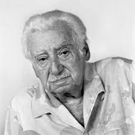

Jorge Amado [1912-2001]
Con người vĩ đại của văn học thế giới này là linh hồn của dân tộc Braxin. Trong căn nhà của ông ở Bahia, ông nhớ lại sự nghiệp của ông. Và những cuộc chiến đấu của ông.
Vào tháng 2 ngột ngạt ở giữa mùa hè vùng Nam cực này, con đường Rio Vermelho im lìm. Ở số nhà 33, trước cảnh cửa gỗ treo hai trái tim nhỏ bằng sứ, dưới cái chuông, xác nhận rằng người ta tới đúng nhà của Zélia Gattai và Jorge Amado [1912-2001]. 35 năm đã qua kể từ khi nhà văn nổi tiếng nhất Braxin mua ngôi nhà này ở thành phố và ông đã làm cho nó nổi danh trên khắp thế giới. Từ Cacao, Đất dữ; Gabriela, quế và đinh hương; Dona Flor và hai người chồng của mụ cho tới Xưởng phép lạ, hàng chục tác phẩm của ông đã được sáng tác, hàng triệu ấn bản đã được bán ra với hơn 40 ngữ. Jorge Amado đã tự đặt cho mình như một trong những tượng đài của nền văn học Braxin và thế giới, một trong những nhà văn hiếm hoi đã biết thể hiệntâm hồn lai, nổi tiếng là không thể nắm bắt được của Braxin. Trong thành phố đất đỏ này, thường bị những nhà thông thái hợm mình ở Sao Paulo khinh rẻ, Jorge Amado đã học được tất cả. Ở đây, ông đã khai thác cốt tủy và cái sườn cho những tác phẩm của ông, từ những cô gái điếm, những người da đen, những tay du đãng và những đứa trẻ bơ vơ trên bến cảng, không những chỉ là những kẻ cùng khổ mà còn là những người hùng trong các tiểu thuyết của con người đã được gọi là Victor Hugo của Braxin.
Trong ngôi nhà lớn mở ra khu vườn rộng, ông ngồi bên bà Zélia, người vợ. Ông già nhớ lại thời thơ ấu trong khi uống từng ngụm nhỏ nước vắt trái cây: “Mọi chuyện ở đây chỉ thay đổi trên bề mặt, nhìn bề ngoài. Tất nhiên, thành phố cùng đất nước đã mang một vẻ khác. Nhưng trong những đặc trưng cơ bản của nó, Bahia đã không tiến triển. Tôi còn vẫn thấy cảnh nghèo khổ tiếp diễn. Đơn giản là từ 1985, mặc dù đã hết ảo tưởng, nhưng nền dân chủ vẫn cho phép chúng tôi hy vọng. Kết thúc chế độ độc tài, chính là sự bắt đầu tất cả”.
Amado đã biết rõ vùng đông bắc ngay từ khi ra đời năm 1912 ở một thành phố nhỏ cách Bahia 100 km. Ở đấy, cha ông khai thác một đồn điền trồng cacao, trước khi những trận lụt tràn tới buộc gia đình phải ra đi. Amado nhớ lại tất cả: Những lần đọc truyện của Dickens, cuộc bỏ nhà ra đi năm 13 tuổi, cuộc phiêu lưu bắt đầu với chiếc vé xe lửa, những người đàn bà đầu tiên, phụ trách mục “chó chết” từ năm 14 tuổi của tờ Diario de Bahia, cuộc cách mạng theo chủ nghĩa tân thời, chế độ độc tài của Vargas mà Amado đã chống lại bằng cách gia nhập Đảng cộng sản và viết “tiểu thuyết vô sản”. Jorge Amado cho rằng: “Đó là thời của tất cả các đầu óc bè phái. Người ta thật sự tin vào chủ nghĩa xã hội. Khi Staline qua đời, Zélia và tôi đều đã khóc sướt mướt”.
Vào cuối thập niên 50, với cuốn truyện tình Gabriela, quế và đinh hương, nhiều người đã coi ông như một kẻ phản bội. Điều đó không ngăn được ông tiếp tục cuộc đấu tranh cho nền dân chủ bằng các khả năng khác, nhất là dưới thời kỳ độc tài lần thứ hai. Các nhà phê bình văn học cũng không nương tay. “Quá hoa mỹ kỳ cục, quá dâm dục, quá nhiều truyền thống dân gian”: Một số phát biểu khi thấy có lẽ trái tim của người kể truyện ở ông quá rộng lớn và không biết tìm thấy trong các cuốn sách của ông những đoạn về hoàn cảnh phổ cập hay những vấn đề đặt ra về ảnh hưởng của văn hóa da đen trong bản sắc Braxin. Amado đáp lại: “Những lời trách cứ đó không gây ấn tượng với tôi. Tôi làm công việc của tôi và những nhà phê bình làm công việc của họ. Đối với tôi, chỉ có nhận xét của bạn đọc là đáng kể”. Khi hỏi ông có một ý niệm về vị trí dành cho ông và tác phẩm của ông trong 50 năm tới, ông trả lời gần như hàm ý: “Tôi không biết, nhưng tôi không chắc… Tôi cho rằng những lời bình luận sâu sắc về công việc của tôi còn chưa được tiến hành. Tôi là một tác giả chỉ viết những gì xem ra hay cho một công chúng rộng rãi. Tôi có cảm tưởng mỗi lần bản thân mình lại được khai thác tốt hơn, với một phong cách thích đáng hơn. Đó là ý nghĩ của tôi. Có thể tôi đã lầm. Ngay từ đầu, tôi đã có hai ám ảnh: nền dân chủ và chủ nghĩa nhân văn. Những chi tiết có thể thay đổi trong lối hành văn của tôi. Nhưng những đường nét chủ đạo không thay đổi. Cho nên, nếu sự phê phán thuận lợi, càng hay. Nếu nó bất lợi, phải kiên trì”.
Chủ nghĩa nhân văn, dân chủ: Quả thật không bao giờ ông thay đổi thái độ. Và nhân dân Braxin nhận thấy ông có lý. Người ta tưởng tượng sai sự được lòng dân phi thường của Amado, bậc hiền nhân lão thành của Bahia, có tên trọn đời là Oba de Candomblé, có nghĩa là giáo chủ hỗn hợp giữa truyền thống đạo Thiên Chúa với những vị thần châu Phi-Braxin. Bà Zélia cho hay: “Mọi người đến gặp ông để hỏi những điều không thể tưởng tượng được. Phụ nữ đến yêu cầu ông đặt tên thánh cho con họ, thanh niên muốn ông bày vẽ công việc cho họ”. Còn ông thở dài: “Thật là nặng nề khi phải gánh vác. Người ta yêu cầu tôi rất nhiều và tôi lại có quá ít để cho họ. Cần phải cho nhiều hơn là những cuốn sách của tôi. Cần phải hành động”.
Trong khi chờ đợi, Jorge Amado, tuy sức khoẻ của ông đã sút kém, vẫn tiếp tục viết, hơi chậm lại: “Tôi chưa hoàn toàn từ bỏ”. Và vẫn đi đây đó, nhất là đến nước Pháp mà ông vẫn yêu mến, nơi ông có một chỗ trú chân.
Mệt nhoài vì trời nóng, ông ẩn mình dưới bóng cây lớn trong vườn, nơi đã đặt chiếc ghế dài. Bà Zélia vui vẻ nói: “Chúng tôi đã cho đóng chiếc ghế này ở đây từ 30 năm nay, để cho những ngày về già. Và bây giờ, chúng tôi đến với nó”. Ở phía sau một chút, bức tượng nhỏ Exu, một nữ thần da đen, chăm chú theo dõi cặp vợ chồng. Liếc mắt nhìn Exu, ông Jorge nói chậm rãi: “Trong Candomblé (đạo Vaudou ở Đông Bắc Braxin), không có quỷ cũng như địa ngục. Chắc chắn vì thế mà tôi bao giờ cũng thích tham gia”.
HOÀNG HƯNG